Ouverture de sous-menu
Dans un premier temps on ajoute la clas d'appartition des éléments avant de faire du js pour creer un peu de logique dans l'apparition des éléménts
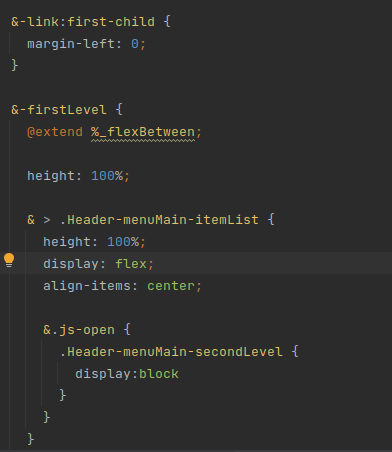
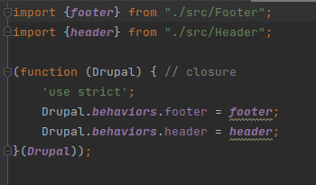
puis on cree notre fichier js dans le src
Si l'on ajoute un élément dans le js du src/javascript/src, tous les éléménets seront transposés dans le fichier assets/build/js/common.js
Ainsi si on veut ajouter une nouvelle libarairie on doit faire un import dans le src/main/main.js
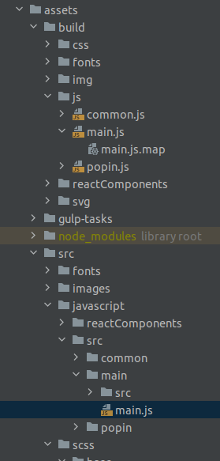
Coimportement js sur tout le site main.js
il conteient un attach qui doit être initialiser
les behaviors permet de dom.content.loaded ainsi dans les attachs va se declencher
Exemple de header.js qui contient la logique js
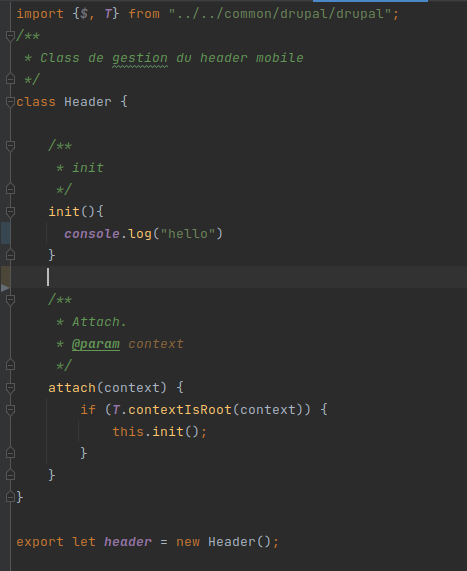
puis declarer le attach dans le main.js
Comportement lorsque l'on veut un page par page
On cree un dossier dans le src par exemeple popin ( avec un fichier generaal popin.js puis PopinDefaut dans le src)
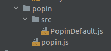
puis on va declarer la librairie dans le theme.librairie pour declarer la librairie
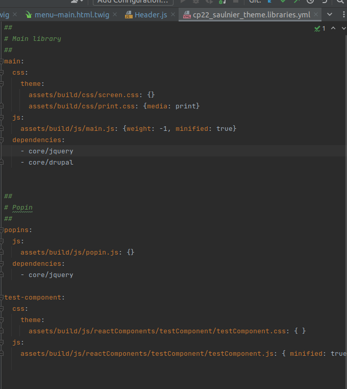
Puis on peut declarer dans la page que l'on sopuhaite l'utilisation du javascript
Le module big pipe
C'est une extension qui permet de mettre des placeholders dasn l'affichage et lorsque le javascript est chargé il affiche dans le lnavigateur le vrai contenu. En ce sens il est indispensable d'utiliser les behaviors
Pour le responsive
L'approche du css
Il est plus interressant de mettre les medias queries directement dans le css. C'est à dire le code css qui inclus le media query
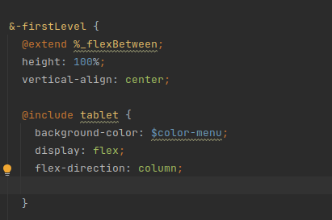
Organisation du template
Creation des elements en html pour le desktop et des éléments pour le mobile notamment pour le menu
Dasn ce cas on applique un dispaly none aux éléments que l'on ne veut poas voir selon le query
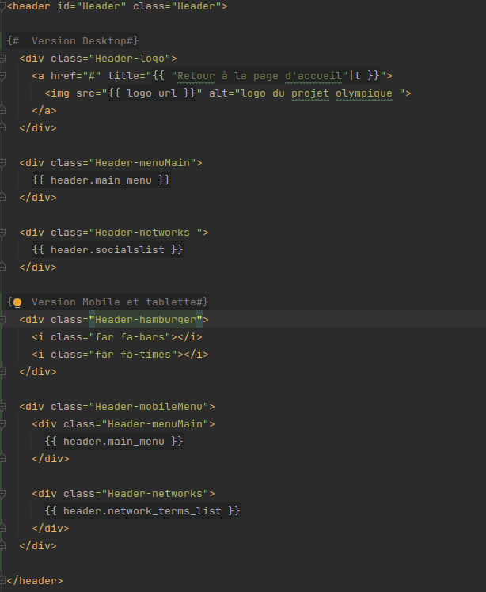

Mise en place de swiper
voir la doc officielle de swiper
Chargement des données
Pour que swiper fonctionne bien il faut que le données soient chargées sous forme de tableau.
Du coup on va modifier
- Le chargement du build dans le block en ajoutant un tableau de chargement
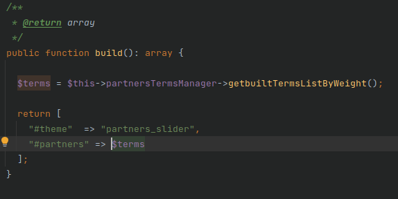
- On modifie le chargement dans la gateway avec un foreach view($termà) et on insère les données dans un tableau, au lieu de viewmultipe que l'on insère dans une variable
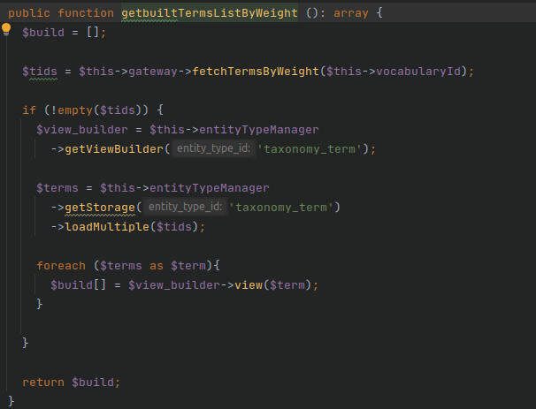
On a ainsi déplacé la logique de chragement dews données pour recevoir un tableau dans le template twig
Chargement du js dans la librairie
on fait les imports dans le fichier js ou l'ion souhaite importer swiper
Ici dans lefichier footer.js on importe swiper
import {$, T} from "../../common/drupal/drupal";
import Swiper, { Navigation, Autoplay } from 'swiper';
Swiper.use([Navigation, Autoplay]);
On ajoute la constante de swiper en lui definissant ses attributs dans l'initialisation du js
// template du slider partenaire :
// web/modules/custom/cp22_saulnier_partners/templates/partners-slider.html.twig
const swiper = new Swiper('.swiper', {
// direction: 'vertical',
// loop: true,
slidesPerView: 5,
spaceBetween: 30,
autoplay: {
delay: 2500,
disableOnInteraction: false,
},
navigation: {
nextEl: '.swiper-button-next',
prevEl: '.swiper-button-prev',
},
});
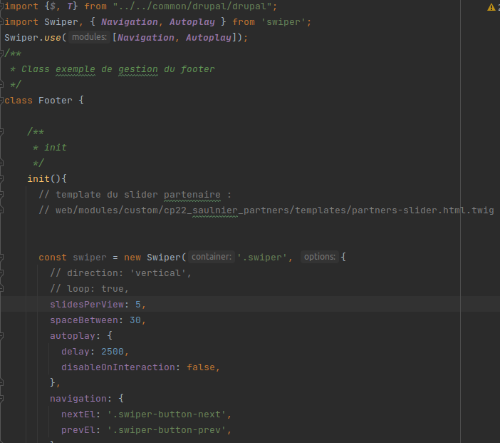
importer swiper dans librairie.yml du theme
On importe la librairie en definissant son lieu de declaration (le theme d'action
js:
assets/build/js/main.js: {weight: -1, minified: true}
dependencies:
- core/jquery
- core/drupal
- cp22_saulnier_theme/swiper
Puis on declare la librairie pour la faire exister
swiper:
css:
theme:
https://unpkg.com/swiper@8/swiper-bundle.min.css: { type: external, minified: true, weight: -100}
js:
https://unpkg.com/swiper@8/swiper-bundle.min.js: { type: external, minified: true, weight: -100}
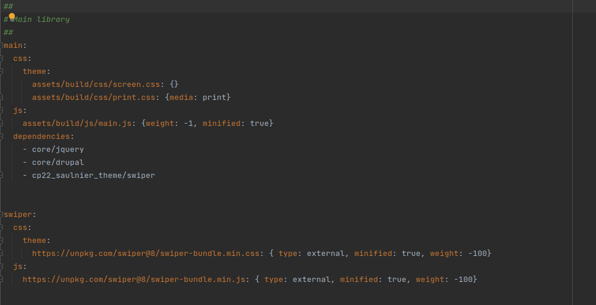
Dans le telmplate twig
On doit charger un tableau d'éléménets dans le twig et charger sur chaque élément swiper
- dans le container: swiper
- dans le wrapper : swiper-wrapper
- sur chaque div element : swiper-slide
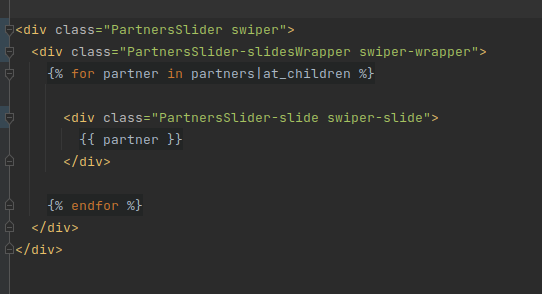